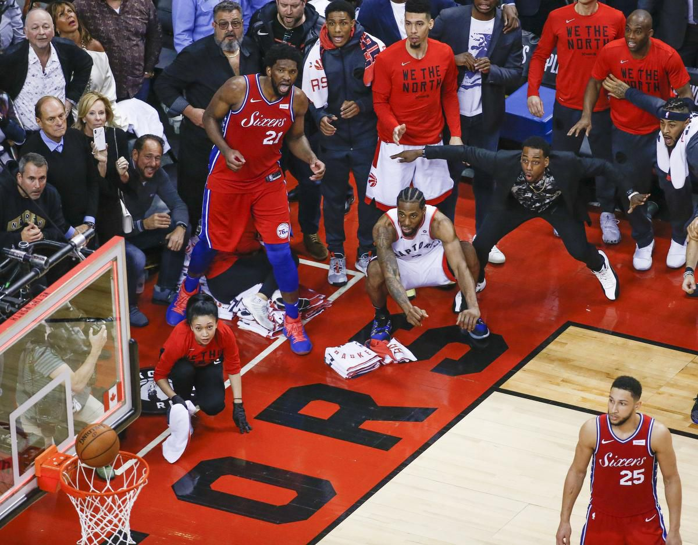
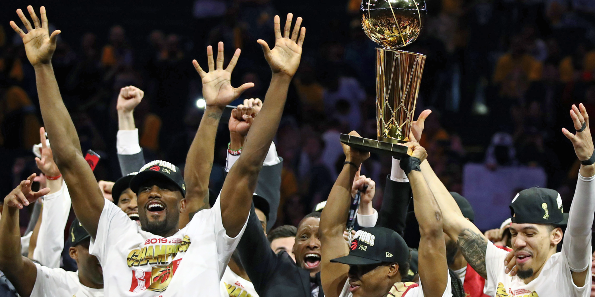
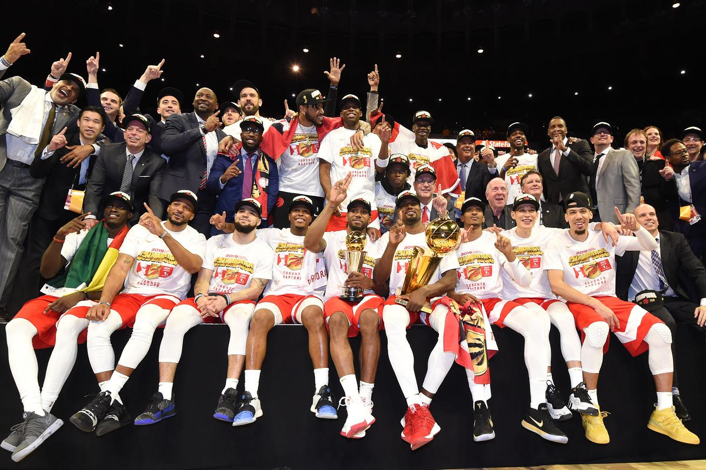

The website for everything Raptors
Come Here to Get Your Latest News
- About the Team
- Players
- Scores and schedules
Club Summary
The Raptors were founded in 1995 along with the Vancover grizzlizes as a Canadian expansion. The raptors remain the only Canadian team in the NBA.
The Raptors have seen some great players play for them like Kawai Leonard, Chris Bosh, Demar Derozan, Kyle Lowry and Vince carter. The Raptors brought
home their first championship this year and hope to see many more in their future.

News
- How will the Raptors do without Kawai Leonard this season?
- Can the Raptors go back to back?
- How will Pascal Siakam handle the new spotlight
- Winning Canada their first championship
- Lowry's new contract
Toronto - Raptors news

Scores and schedules
The Raptors finished their regular season with a record of 58-24 and finished their post season as NBA champs.
The Raptors beat the Magic,Sixers,Bucks and Warriors to win the NBA championship.
Toronto -Raptors full schedule
History
The raptors where founded in 1995 along with the Vancover Grizzlies as a Canadian expansion. Their early years had small playoffs runs lead by Vince Carter,
who was Toronto's star player. The Raptors went through a dry patch in the mid 2000's but came back with the help of Demar Derozan and Kyle Lowry. The Raptors
had many playoff runs and capped it off with a NBA Title in 2019. The first NBA Championship outside of the US.
The Toronto Raptors start their Pre season on Tuesday October 8th. The Raptors are starting their season as defending
champions but are missing a key player in Kawai Leonard. Kawai has
singed a contract with the Clippers after leading the Raptors to
their first championship.
Hopefully we can see the raptors repeat this season.
Roster
OG Anunoby
Chris Boucher
Lorenzo Brown
Marc Gasol
Serge Ibaka
Kyle Lowry
Jordan Loyd
Patrick McCaw
Jodie Meeks
C.J. Miles
Malcolm Miller
Greg Monroe
Eric Moreland
Norman Powell
Malachi Richardson
Pascal Siakam
Fred VanVleet
Delon Wright
Coach
Nick Nurse
